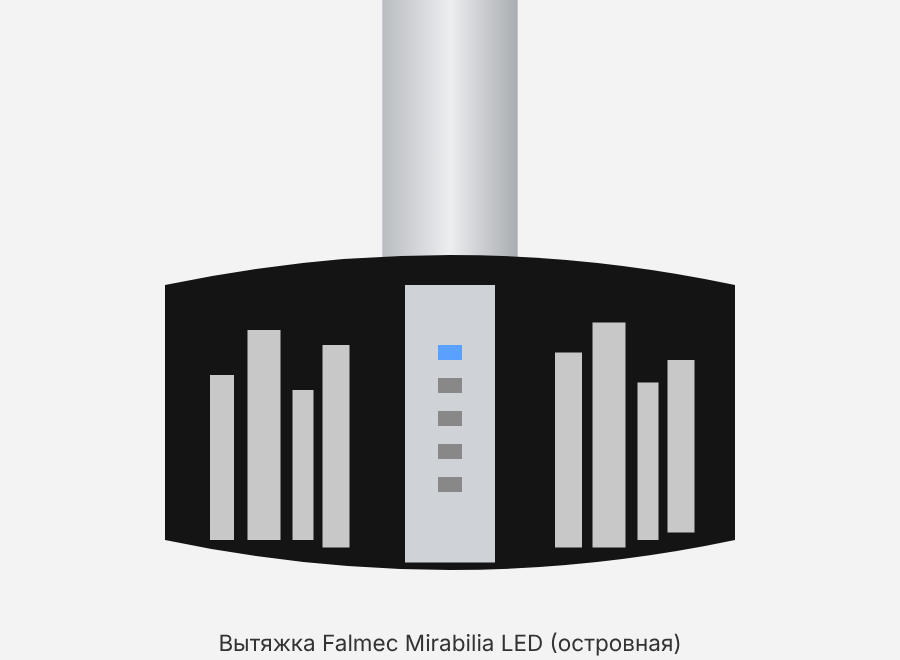

• Falmec Mirabilia — островная вытяжка, исполнение Round Island 65 (круглая, диаметр 65 см), стеклянные панели с принтом-силуэтом города (декор, вероятно, «New York»), дымоход из нержавейки. • Код на шильдике: CJRI65.E50P2#ZZZI431F; тип BL; мощность 280 W; год выпуска 2016. • Расшифровка по аналогии с кодами продавцов: CJRI65 — Mirabilia Round Isola 65; E50 — версия с мотором 800 м³/ч (у похожих моделей hausdorf.ru указывает «(800) ECP»); хвост #ZZZI…F — исполнение/декор. Официальной расшифровки в инструкции нет. • Шильдик с данными (напряжение, мощность, код) находится внутри вытяжки — за металлическими жироулавливающими фильтрами. • Инструкция Falmec общая для всей серии Mirabilia (Round Wall 67, Round Island 65/85, Square Wall 67/97, Square Island 85); декоры: Pharo, Manhattan, New York, Fenice, Moonlight, Penelope, Elektra, Groove, Maia, Platinum.
• Кнопки сверху вниз: ☀ свет · − · таймер · + · ⏻ питание мотора. Текущая скорость показывается светодиодами в кнопках. • ⏻ (ON/OFF) — включает/выключает мотор. При включении вытяжка стартует на той скорости, на которой её выключили в прошлый раз. • + — повышает скорость 1 → 2 → 3 → 4. Скорость 4 — интенсивный режим: светодиод «+» мигает, через несколько минут вытяжка сама переходит на скорость 3 (точное время в инструкции не указано; продавец пишет ~10–15 мин). • − — понижает скорость 4 → 3 → 2 → 1. • Какая скорость когда: 1 — поддерживать воздух чистым с минимальным расходом энергии; 2 — обычная готовка; 3 — сильные запахи и пар; 4 — быстро убрать сильный пар/запах. • ☀ короткое нажатие — включить/выключить рабочий свет LED. • ☀ удержание 3 с — «окружающий» (декоративный/фоновый) свет. • Яркость: при ВЫКЛЮЧЕННОМ моторе кнопками + и − регулируется интенсивность света. • Кнопка таймера (✱/часы, средняя): нажатие при работающем моторе — автоотключение через 15 минут, при этом мигает красный светодиод. Отмена — повторное нажатие таймера или кнопка ⏻ (красный светодиод гаснет). • Сигнал засорения фильтров: красный светодиод горит ПОСТОЯННО (при выключенном моторе) — пора мыть металлические фильтры; срабатывает примерно через 30 часов работы. • Сброс сигнала фильтров: после мойки удерживать кнопку 3 секунды — счётчик обнуляется. В инструкции символ кнопки в тексте не прочитался; по логике (красный светодиод — у кнопки таймера) это кнопка таймера. Если не сбрасывается — попробовать удержание других кнопок при выключенном моторе. • Совет из инструкции: включать вытяжку минимум за 1 минуту до начала готовки и оставлять работать после, пока не уйдут пар и запахи. • Отдельного сигнала для угольных фильтров в инструкции не указано.
• Вытяжка бывает в двух вариантах: вытяжной (воздух уходит по трубе наружу/в вентканал) и фильтрующий (рециркуляция — воздух проходит угольные фильтры и возвращается в кухню). • Как понять, что у нас: если от верха дымохода идёт труба (Ø150 мм) в вентканал/на улицу — режим «наружу». Если трубы нет, а воздух выходит через решётки/щели в верхней части дымохода, и внутри (за металлическими фильтрами) стоят угольные фильтры — рециркуляция. • Также можно снять металлический фильтр и посмотреть: есть ли на моторе/за ним угольные кассеты. • Обратный клапан: на моторах 800 м³/ч и мощнее стоит клапан против обратного потока наружного воздуха. В режиме рециркуляции клапан НЕ ставится (его снимают с патрубка мотора). • Для режима «наружу»: труба не меньше диаметра патрубка, минимум изгибов и длины, на горизонтальных участках небольшой уклон вниз; в холодных зонах трубу утеплить. Нельзя подключать к дымоходам котлов, каминов и т. п.
• Как часто: каждые ~30 часов работы (загорится красный сигнал), а в разделе по уходу — не реже раза в месяц. • Как снять: отключить питание; фильтры расположены снизу вытяжки — снимаются по схеме из инструкции по монтажу (обычно потянуть ручку/защёлку фильтра и вынуть). Подробный текст в инструкции не приведён — только рисунок. • Мойка вручную: замочить примерно на 1 час в горячей (кипящей) воде с моющим средством, не сгибать, хорошо промыть, полностью высушить перед установкой. • Посудомойка: можно, но на низкой температуре (не выше 55 °C); фильтр может потемнеть — на работу это не влияет. • Не использовать едкие, кислотные или щелочные средства. • Без металлических фильтров вытяжкой пользоваться нельзя. • После мойки — сбросить сигнал фильтров (удержание 3 с, см. «Управление»).
• Нужны только в фильтрующем варианте; при выводе воздуха наружу не ставятся. • Замена каждые 3–4 месяца в зависимости от интенсивности использования. Мыть/регенерировать нельзя. • Как менять: по схеме из инструкции по монтажу (в тексте шагов нет). • Артикул в инструкции не указан. По данным продавцов: запчасть Falmec 103050091 (продавец hausdorf.ru указывает её для Mirabilia isola 65; аналог vhbw ссылается на 103050091 / 114163). Комплект рециркуляции к островной Mirabilia 65 у продавца — KACL.261. Перед заказом сверить с дилером по коду CJRI65.E50P2#ZZZI431F.
• Вытяжка с высокоэффективными LED-спотами 12 V. • Замена спота: обесточить, дать остыть и заменить по рисунку в инструкции (текстового описания шагов нет). • Тип/артикул светодиода в инструкции не указан — снять старый спот и подобрать такой же (12 V) у дилера Falmec. • У старых версий Mirabilia (до ~2013) стояли галогенки 20 W — для нашей LED-версии не подходят.
• Перед чисткой — выключить из розетки или общим выключателем; не чистить, пока детали горячие. • Снаружи чистить не реже раза в 15 дней. • Матовая нержавейка: Falmec рекомендует салфетки «Magic Steel»; иначе — влажная тряпка с мягким жидким средством или денатуратом; вытирать мягкой тканью. • Стекло (панели с принтом): только специальные неабразивные, неедкие средства для стекла и мягкая ткань. • Кнопки и подсветку протирать почти сухой тряпкой — влага не должна попасть в электронику. • Запрещено: абразивы, кислотные/едкие средства, жёсткие губки. • Внутри: электрические части и мотор не мыть жидкостями и растворителями.
• Специальной таблицы неисправностей в инструкции нет. Ниже — что из неё следует: • Горит постоянный красный светодиод → помыть металлические фильтры и сбросить счётчик удержанием кнопки 3 с. • Скорость 4 сама упала на 3 → это нормально, интенсивный режим ограничен по времени. • Вытяжка сама выключилась через 15 мин → был включён таймер (мигал красный). • Свет не регулируется + / − → регулировка работает только при выключенном моторе. • Плохо тянет / остаются запахи → помыть металлические фильтры; при рециркуляции заменить угольные; проверить, не снят ли/не заклинил обратный клапан (в режиме «наружу»). • Повреждён кабель или корпус → не пользоваться, обесточить, вызвать сервис. Самостоятельно не ремонтировать — только дилер/авторизованный сервис Falmec.
• Не оставлять под вытяжкой открытый огонь без присмотра, не фламбировать. • Следить за фритюром — перегретое масло может загореться. • Минимальное расстояние от варочной панели: газ — 600 мм (в тексте также «как правило 65 см»), индукция/электро — 520 мм; если инструкция газовой плиты требует больше — соблюдать её. • Общий вес предметов на вытяжке — не более 1,5 кг. • Не подключать к дымоходам от котлов, каминов и т. п.; при одновременной работе с неэлектрическими приборами (газ, камин) нужен приток воздуха — для Германии норма разрежения не более 4 Па. • Все работы по уходу — только при отключённом питании. Доступные части могут нагреваться при готовке. • Не устанавливать на улице.
• Модель: Mirabilia Round Island 65, вес 31 кг (по инструкции). • Мощность: 280 W (шильдик); напряжение — см. шильдик внутри (в инструкции не указано). • Скорости: 4 (4-я — интенсивная, временная). Таймер: 15 мин. Сигнал фильтров: ~30 ч. • Производительность: в инструкции не указано; у продавца для аналогичных Mirabilia isola 65 — до 800 м³/ч, шум 45–64 дБ (не официальные данные Falmec). • Патрубок отвода: Ø150 мм (на рисунках также Ø160 мм для бокового выхода островной версии). • Освещение: LED-споты 12 V. • Сделано в Италии.
• Угольный фильтр: Falmec 103050091 (по данным продавцов, не из инструкции); аналоги vhbw с совместимостью 103050091 / 114163. • Комплект рециркуляции для Mirabilia isola 65: KACL.261 (по коду комплектации у hausdorf.ru). • Металлические жироулавливающие фильтры: артикул в инструкции не указан. • LED-спот: артикул в инструкции не указан. • Для заказа называть дилеру полный код CJRI65.E50P2#ZZZI431F и тип BL.